2024 Advanced Higher Physics marking instructions
Source: Scottish Qualifications Authority (SQA) / Qualifications Scotland. This is a StemInteract HTML companion, not an official HTML edition. Selectable text is supplied alongside original page images. Use the images or original PDF for equations, powers, fractions, vector notation, tables and diagrams; text extraction cannot fully preserve mathematical layout.
Jump to a question
PDF page 1
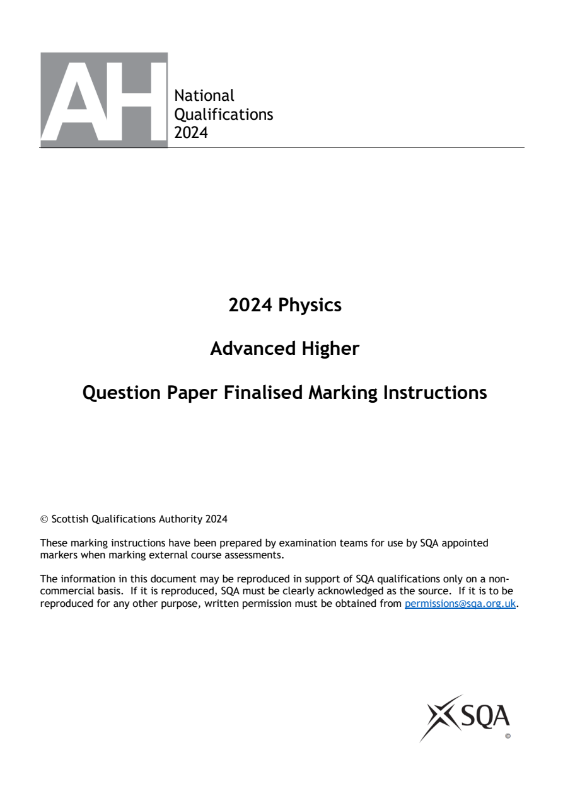
Selectable page text
National
Qualifications
2024
2024 Physics
Advanced Higher
Question Paper Finalised Marking Instructions
Scottish Qualifications Authority 2024
These marking instructions have been prepared by examination teams for use by SQA appointed
markers when marking external course assessments.
The information in this document may be reproduced in support of SQA qualifications only on a non-
commercial basis. If it is reproduced, SQA must be clearly acknowledged as the source. If it is to be
reproduced for any other purpose, written permission must be obtained from permissions@sqa.org.uk.PDF page 2
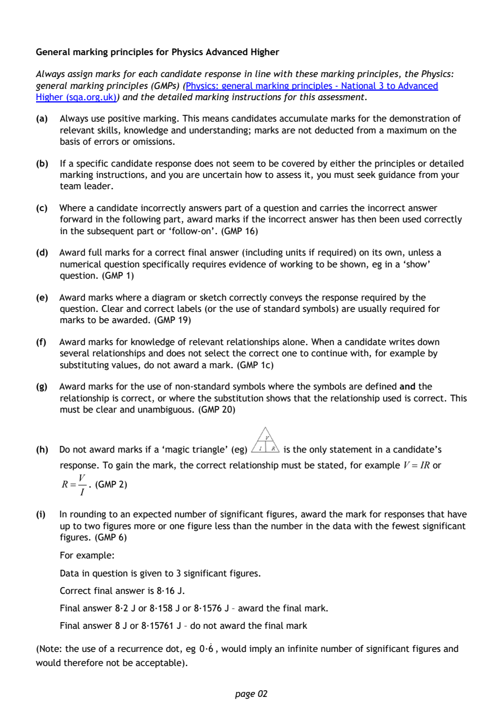
Selectable page text
General marking principles for Physics Advanced Higher
Always assign marks for each candidate response in line with these marking principles, the Physics:
general marking principles (GMPs) (Physics: general marking principles - National 3 to Advanced
Higher (sqa.org.uk)) and the detailed marking instructions for this assessment.
(a) Always use positive marking. This means candidates accumulate marks for the demonstration of
relevant skills, knowledge and understanding; marks are not deducted from a maximum on the
basis of errors or omissions.
(b) If a specific candidate response does not seem to be covered by either the principles or detailed
marking instructions, and you are uncertain how to assess it, you must seek guidance from your
team leader.
(c) Where a candidate incorrectly answers part of a question and carries the incorrect answer
forward in the following part, award marks if the incorrect answer has then been used correctly
in the subsequent part or ‘follow-on’. (GMP 16)
(d) Award full marks for a correct final answer (including units if required) on its own, unless a
numerical question specifically requires evidence of working to be shown, eg in a ‘show’
question. (GMP 1)
(e) Award marks where a diagram or sketch correctly conveys the response required by the
question. Clear and correct labels (or the use of standard symbols) are usually required for
marks to be awarded. (GMP 19)
(f) Award marks for knowledge of relevant relationships alone. When a candidate writes down
several relationships and does not select the correct one to continue with, for example by
substituting values, do not award a mark. (GMP 1c)
(g) Award marks for the use of non-standard symbols where the symbols are defined and the
relationship is correct, or where the substitution shows that the relationship used is correct. This
must be clear and unambiguous. (GMP 20)
(h) Do not award marks if a ‘magic triangle’ (eg) is the only statement in a candidate’s
response. To gain the mark, the correct relationship must be stated, for example V = IR or
V
R= . (GMP 2)
I
(i) In rounding to an expected number of significant figures, award the mark for responses that have
up to two figures more or one figure less than the number in the data with the fewest significant
figures. (GMP 6)
For example:
Data in question is given to 3 significant figures.
Correct final answer is 8·16 J.
Final answer 8·2 J or 8·158 J or 8·1576 J – award the final mark.
Final answer 8 J or 8·15761 J – do not award the final mark
(Note: the use of a recurrence dot, eg 0·6, would imply an infinite number of significant figures and
would therefore not be acceptable).
page 02PDF page 3
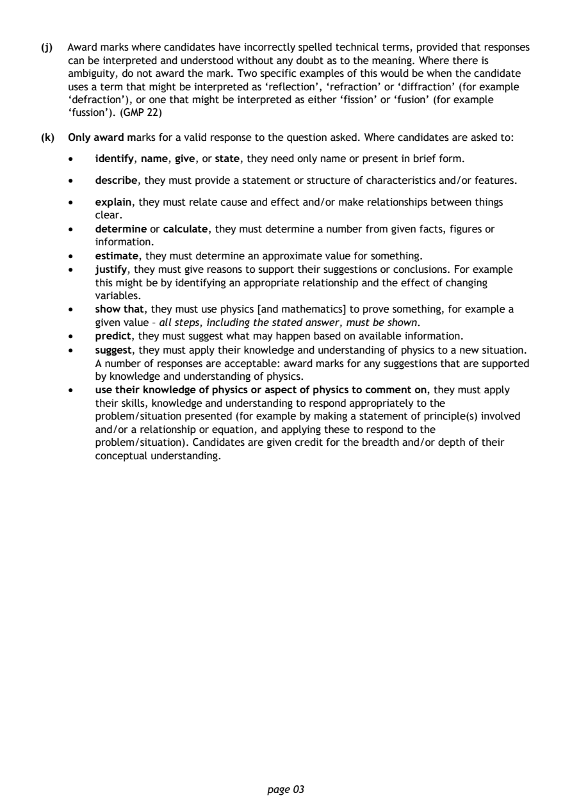
Selectable page text
(j) Award marks where candidates have incorrectly spelled technical terms, provided that responses
can be interpreted and understood without any doubt as to the meaning. Where there is
ambiguity, do not award the mark. Two specific examples of this would be when the candidate
uses a term that might be interpreted as ‘reflection’, ‘refraction’ or ‘diffraction’ (for example
‘defraction’), or one that might be interpreted as either ‘fission’ or ‘fusion’ (for example
‘fussion’). (GMP 22)
(k) Only award marks for a valid response to the question asked. Where candidates are asked to:
• identify, name, give, or state, they need only name or present in brief form.
• describe, they must provide a statement or structure of characteristics and/or features.
• explain, they must relate cause and effect and/or make relationships between things
clear.
• determine or calculate, they must determine a number from given facts, figures or
information.
• estimate, they must determine an approximate value for something.
• justify, they must give reasons to support their suggestions or conclusions. For example
this might be by identifying an appropriate relationship and the effect of changing
variables.
• show that, they must use physics [and mathematics] to prove something, for example a
given value – all steps, including the stated answer, must be shown.
• predict, they must suggest what may happen based on available information.
• suggest, they must apply their knowledge and understanding of physics to a new situation.
A number of responses are acceptable: award marks for any suggestions that are supported
by knowledge and understanding of physics.
• use their knowledge of physics or aspect of physics to comment on, they must apply
their skills, knowledge and understanding to respond appropriately to the
problem/situation presented (for example by making a statement of principle(s) involved
and/or a relationship or equation, and applying these to respond to the
problem/situation). Candidates are given credit for the breadth and/or depth of their
conceptual understanding.
page 03PDF page 4
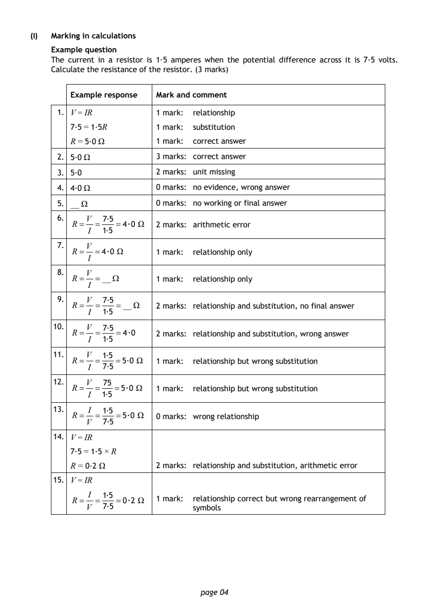
Selectable page text
(l) Marking in calculations
Example question
The current in a resistor is 1·5 amperes when the potential difference across it is 7·5 volts.
Calculate the resistance of the resistor. (3 marks)
Example response Mark and comment
1. V = IR 1 mark: relationship
7·5 = 1·5R 1 mark: substitution
R = 5·0 Ω 1 mark: correct answer
2. 5·0 Ω 3 marks: correct answer
3. 5·0 2 marks: unit missing
4. 4·0 Ω 0 marks: no evidence, wrong answer
5. __ Ω 0 marks: no working or final answer
6. V 7·5
R= = =4·0 Ω 2 marks: arithmetic error
I 1·5
7. V
R= =4·0 Ω 1 mark: relationship only
I
8. V
R= = __Ω 1 mark: relationship only
I
9. V 7·5
R = = = __Ω 2 marks: relationship and substitution, no final answer
I 1·5
10. V 7·5
R = = =4·0 2 marks: relationship and substitution, wrong answer
I 1·5
11. V 1·5
R= = =5·0 Ω 1 mark: relationship but wrong substitution
I 7·5
12. V 75
R= = =5·0 Ω 1 mark: relationship but wrong substitution
I 1·5
13. I 1·5
R= = =5·0 Ω 0 marks: wrong relationship
V 7·5
14. V = IR
7·5 = 1·5 × R
R = 0·2 Ω 2 marks: relationship and substitution, arithmetic error
15. V = IR
I 1·5
R= = =0·2 Ω 1 mark: relationship correct but wrong rearrangement of
V 7·5 symbols
page 04PDF page 5
Question 1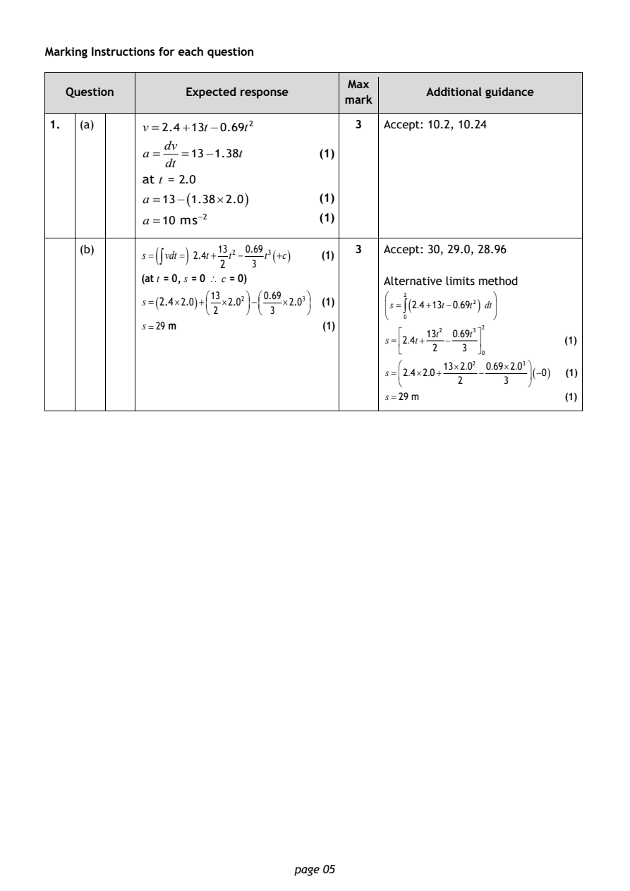
Selectable page text
Marking Instructions for each question
Max
Question Expected response Additional guidance
mark
1. (a) v =2.4+13t−0.69t² 3 Accept: 10.2, 10.24
dv
a = =13−1.38t (1)
dt
at t = 2.0
a =13−( 1.38×2.0 ) (1)
a =10 ms⁻² (1)
(b) ( ) 13 0.69 3 Accept: 30, 29.0, 28.96
s= ∫vdt= 2.4t+ t²− t³(+c) (1)
2 3
(at t = 0, s = 0 ∴ c = 0) Alternative limits method
s=(2.4×2.0)+ 13 ×2.0² − 0.69 ×2.0³ (1) s=∫² ( 2.4+13t−0.69t² ) dt
2 3
0
s=29 m (1)
13t² 0.69t³²
s=2.4t+ − (1)
2 3 ₀
13×2.0² 0.69×2.0³
s=2.4×2.0+ − (−0) (1)
2 3
s=29 m (1)
page 05PDF page 6
Question 2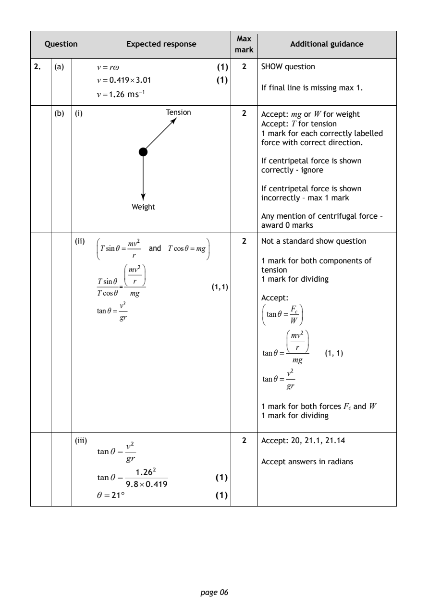
Selectable page text
Max
Question Expected response Additional guidance
mark
2. (a) v=rω (1) 2 SHOW question
v=0.419×3.01 (1)
If final line is missing max 1.
v=1.26 ms⁻¹
(b) (i) 2 Accept: mg or W for weight
Accept: T for tension
1 mark for each correctly labelled
force with correct direction.
If centripetal force is shown
correctly - ignore
If centripetal force is shown
incorrectly – max 1 mark
Any mention of centrifugal force –
award 0 marks
(ii) mv² 2 Not a standard show question
Tsinθ = and Tcosθ =mg
r
1 mark for both components of
mv² tension
Tsinθ r 1 mark for dividing
= (1, 1)
Tcosθ mg
Accept:
v²
tanθ = F_{c}
gr tanθ =
W
mv²
r
tanθ = (1, 1)
mg
v²
tanθ =
gr
1 mark for both forces F_{c} and W
1 mark for dividing
(iii) 2 Accept: 20, 21.1, 21.14
v²
tanθ =
gr
Accept answers in radians
1.26²
tanθ = (1)
9.8×0.419
θ =21° (1)
page 06PDF page 7
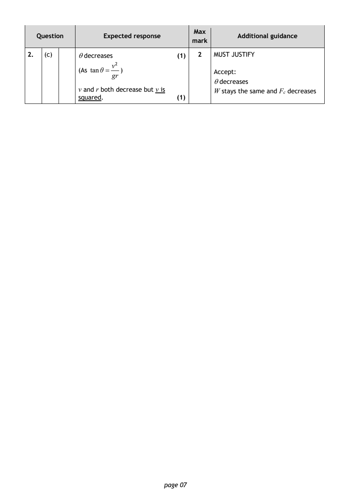
Selectable page text
Max
Question Expected response Additional guidance
mark
2. (c) θ decreases (1) 2 MUST JUSTIFY
v²
(As tanθ = ) Accept:
gr
θ decreases
v and r both decrease but v is W stays the same and F_{c} decreases
squared. (1)
page 07PDF page 8
Question 3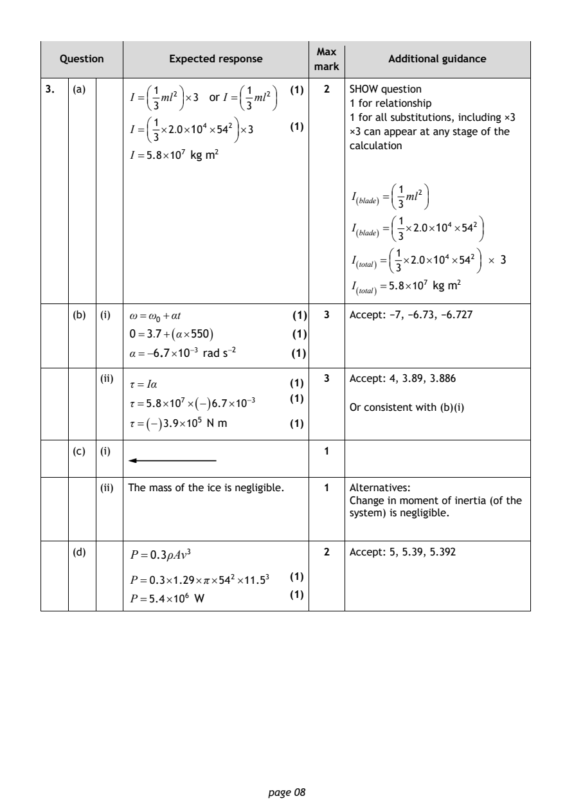
Selectable page text
Max
Question Expected response Additional guidance
mark
3. (a) 1 1 (1) 2 SHOW question
I = ml²×3 or I = ml²
3 3 1 for relationship
1 for all substitutions, including ×3
1
I = ×2.0×10⁴×54²×3 (1) ×3 can appear at any stage of the
3
calculation
I =5.8×10⁷ kg m²
1
I _{b}ₗₐ_{d}ₑ = ml²
( )
3
1
I _{b}ₗₐ_{d}ₑ = ×2.0×10⁴×54²
( )
3
1
I ₜₒₜₐₗ = ×2.0×10⁴×54² × 3
( )
3
I ₜₒₜₐₗ =5.8×10⁷ kg m²
( )
(b) (i) ω=ω₀ +αt (1) 3 Accept: −7, −6.73, −6.727
0=3.7+(α×550) (1)
α =−6.7×10⁻³ rad s⁻² (1)
(ii) 3 Accept: 4, 3.89, 3.886
τ = Iα (1)
τ =5.8×10⁷×(−) 6.7×10⁻³ (1)
Or consistent with (b)(i)
τ =(−) 3.9×10⁵ N m (1)
(c) (i) 1
(ii) The mass of the ice is negligible. 1 Alternatives:
Change in moment of inertia (of the
system) is negligible.
(d) P =0.3ρAv³ 2 Accept: 5, 5.39, 5.392
P =0.3×1.29×π×54²×11.5³ (1)
(1)
P =5.4×10⁶ W
page 08PDF page 9
Question 4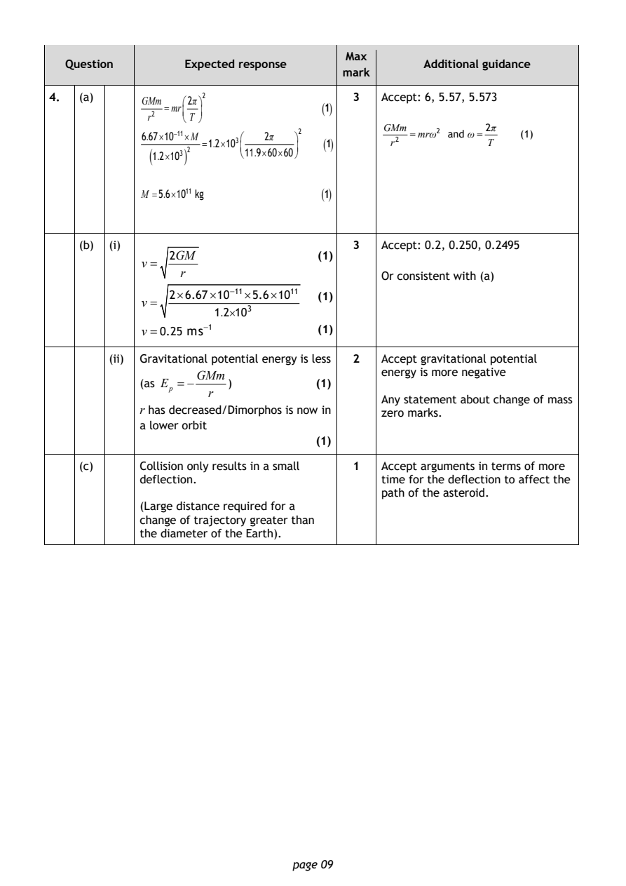
Selectable page text
Max
Question Expected response Additional guidance
mark
4. (a) 3 Accept: 6, 5.57, 5.573
GMm 2π²
=mr (1)
r² T
GMm 2π
6.67×10⁻¹¹×M
=1.2×10³
2π
2
(1) r²
=mrω² and ω=
T
(1)
(
1.2×10³
)
²
11.9×60×60
M =5.6×10¹¹ kg (1)
(b) (i) 3 Accept: 0.2, 0.250, 0.2495
2GM (1)
v=
r Or consistent with (a)
2×6.67×10⁻¹¹×5.6×10¹¹ (1)
v=
1.2×10³
v=0.25 ms⁻¹ (1)
(ii) Gravitational potential energy is less 2 Accept gravitational potential
GMm energy is more negative
(as Eₚ =− ) (1)
r
Any statement about change of mass
r has decreased/Dimorphos is now in zero marks.
a lower orbit
(1)
(c) Collision only results in a small 1 Accept arguments in terms of more
deflection. time for the deflection to affect the
path of the asteroid.
(Large distance required for a
change of trajectory greater than
the diameter of the Earth).
page 09PDF page 10
Question 5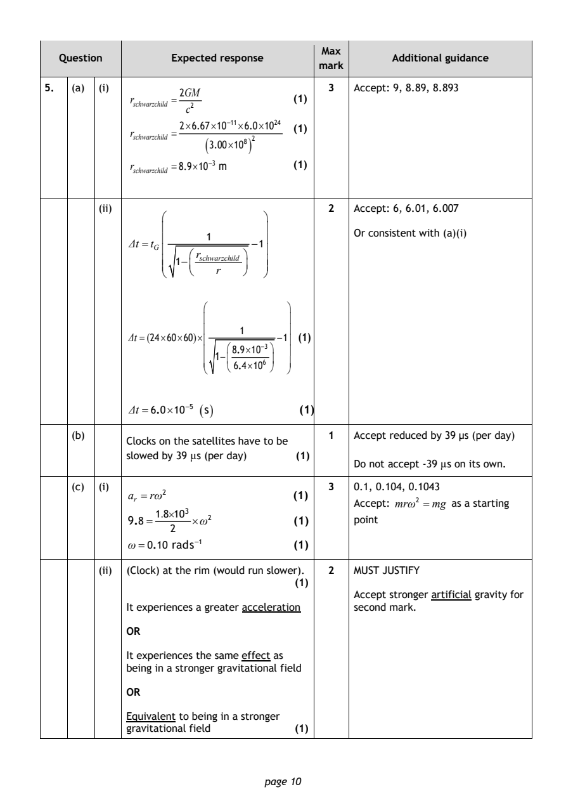
Selectable page text
Max
Question Expected response Additional guidance
mark
5. (a) (i) 3 Accept: 9, 8.89, 8.893
2GM
rₛ_{c}ₕ_{w}ₐᵣ_{z} = (1)
child
c²
2×6.67×10⁻¹¹×6.0×10²⁴
(1)
rₛ_{c}ₕ_{w}ₐᵣ_{z} =
child ( )
3.00×10⁸ ²
rₛ_{c}ₕ_{w}ₐᵣ_{z} =8.9×10⁻³ m (1)
child
(ii) 2 Accept: 6, 6.01, 6.007
Or consistent with (a)(i)
1
Δt =t_{G} −1
rₛ_{c}ₕ_{w}ₐᵣ
1−
r^{z}^{c}^{h}ⁱ^{l}^{d}
1
Δt=(24×60×60)×
−1 (1)
8.9×10⁻³
1−
6.4×10⁶
Δt =6.0×10⁻⁵ (s) (1)
(b) 1 Accept reduced by 39 µs (per day)
Clocks on the satellites have to be
slowed by 39 µs (per day) (1)
Do not accept -39 µs on its own.
(c) (i) 3 0.1, 0.104, 0.1043
aᵣ =rω² (1)
Accept: mrω² =mg as a starting
1.8×10³
9.8= ×ω² (1) point
2
ω=0.10 rads⁻¹ (1)
(ii) (Clock) at the rim (would run slower). 2 MUST JUSTIFY
(1)
Accept stronger artificial gravity for
It experiences a greater acceleration second mark.
OR
It experiences the same effect as
being in a stronger gravitational field
OR
Equivalent to being in a stronger
gravitational field (1)
page 10PDF page 11
Question 6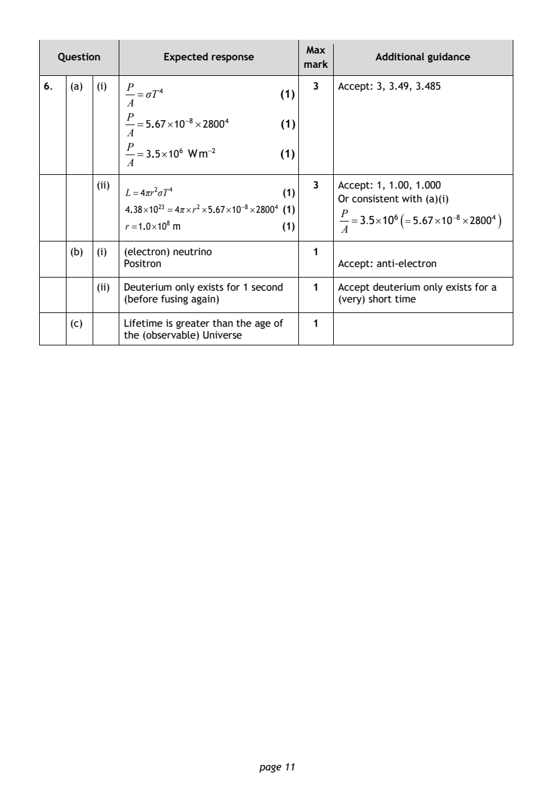
Selectable page text
Max
Question Expected response Additional guidance
mark
6. (a) (i) P 3 Accept: 3, 3.49, 3.485
=σT⁴ (1)
A
P
=5.67×10⁻⁸×2800⁴ (1)
A
P
=3.5×10⁶ Wm⁻² (1)
A
(ii) 3 Accept: 1, 1.00, 1.000
L=4πr²σT⁴ (1)
Or consistent with (a)(i)
4.38×10²³ =4π×r²×5.67×10⁻⁸×2800⁴ (1)
P
( )
=3.5×10⁶ =5.67×10⁻⁸×2800⁴
r=1.0×10⁸ m (1)
A
(b) (i) (electron) neutrino 1
Positron Accept: anti-electron
(ii) Deuterium only exists for 1 second 1 Accept deuterium only exists for a
(before fusing again) (very) short time
(c) Lifetime is greater than the age of 1
the (observable) Universe
page 11PDF page 12
Question 7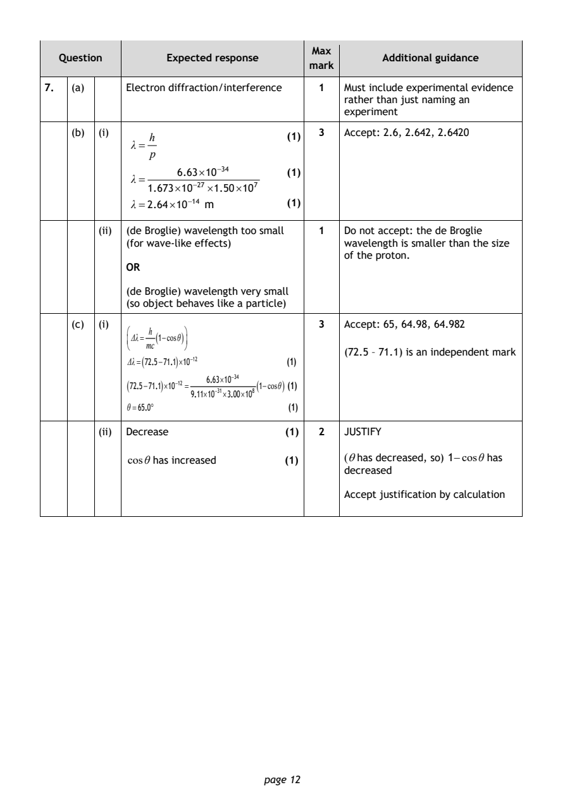
Selectable page text
Max
Question Expected response Additional guidance
mark
7. (a) Electron diffraction/interference 1 Must include experimental evidence
rather than just naming an
experiment
(b) (i) 3 Accept: 2.6, 2.642, 2.6420
h (1)
λ=
p
6.63×10⁻³⁴ (1)
λ=
1.673×10⁻²⁷×1.50×10⁷
λ=2.64×10⁻¹⁴ m (1)
(ii) (de Broglie) wavelength too small 1 Do not accept: the de Broglie
(for wave-like effects) wavelength is smaller than the size
of the proton.
OR
(de Broglie) wavelength very small
(so object behaves like a particle)
(c) (i) 3 Accept: 65, 64.98, 64.982
h
Δλ= (1−cosθ)
mc
(72.5 – 71.1) is an independent mark
Δλ=(72.5−71.1)×10⁻¹² (1)
6.63×10⁻³⁴
(72.5−71.1)×10⁻¹²= (1−cosθ) (1)
9.11×10⁻³¹×3.00×10⁸
θ=65.0° (1)
(ii) Decrease (1) 2 JUSTIFY
cosθ has increased (1) (θ has decreased, so) 1−cosθ has
decreased
Accept justification by calculation
page 12PDF page 13
Question 8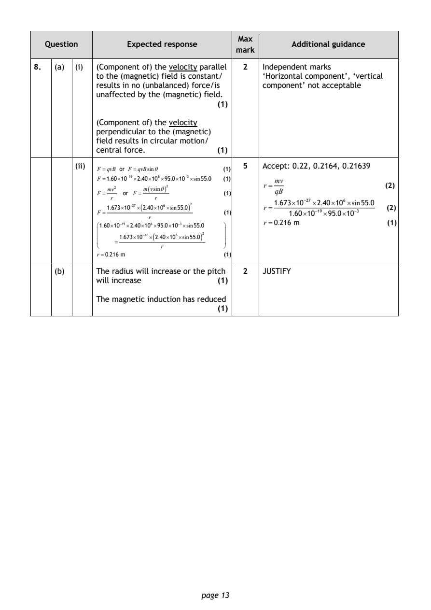
Selectable page text
Max
Question Expected response Additional guidance
mark
8. (a) (i) (Component of) the velocity parallel 2 Independent marks
to the (magnetic) field is constant/ ‘Horizontal component’, ‘vertical
results in no (unbalanced) force/is component’ not acceptable
unaffected by the (magnetic) field.
(1)
(Component of) the velocity
perpendicular to the (magnetic)
field results in circular motion/
central force. (1)
(ii) 5 Accept: 0.22, 0.2164, 0.21639
F=qvB or F=qvBsinθ (1)
F=1.60×10⁻¹⁹×2.40×10⁶×95.0×10⁻³×sin55.0 (1) mv
r= (2)
mv² m(vsinθ)² qB
F= or F= (1)
r r
1.673×10⁻²⁷×(2.40×10⁶×sin55.0)² r=
1.673×10⁻²⁷×2.40×10⁶×sin55.0
(2)
F= (1) 1.60×10⁻¹⁹×95.0×10⁻³
r
r=0.216 m (1)
1.60×10⁻¹⁹×2.40×10⁶×95.0×10⁻³×sin55.0
1.673×10⁻²⁷×(2.40×10⁶×sin55.0)²
=
r
r=0.216 m (1)
(b) The radius will increase or the pitch 2 JUSTIFY
will increase (1)
The magnetic induction has reduced
(1)
page 13PDF page 14
Question 9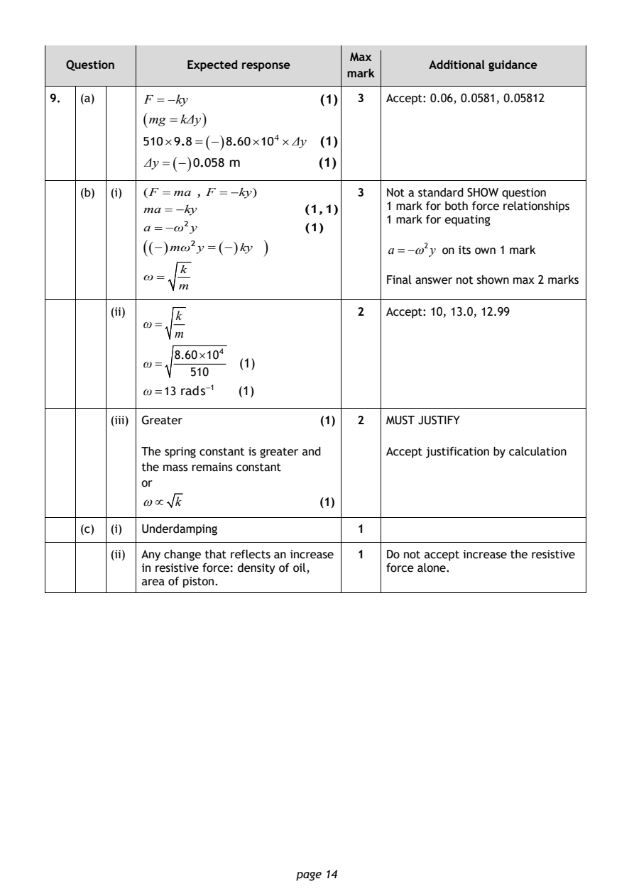
Selectable page text
Max
Question Expected response Additional guidance
mark
9. (a) F = −ky (1) 3 Accept: 0.06, 0.0581, 0.05812
( mg = kΔy )
510×9.8=(−) 8.60×10⁴×Δy (1)
Δy =(−) 0.058 m (1)
(b) (i) (F = ma , F = −ky) 3 Not a standard SHOW question
ma = −ky (1, 1) 1 mark for both force relationships
1 mark for equating
a = −ω²y (1)
((−)mω²y =(−)ky ) a =−ω2y on its own 1 mark
k
ω=
Final answer not shown max 2 marks
m
(ii) 2 Accept: 10, 13.0, 12.99
k
ω=
m
8.60×10⁴
ω= (1)
510
ω=13 rads⁻¹ (1)
(iii) Greater (1) 2 MUST JUSTIFY
The spring constant is greater and Accept justification by calculation
the mass remains constant
or
ω∝ k (1)
(c) (i) Underdamping 1
(ii) Any change that reflects an increase 1 Do not accept increase the resistive
in resistive force: density of oil, force alone.
area of piston.
page 14PDF page 15
Question 10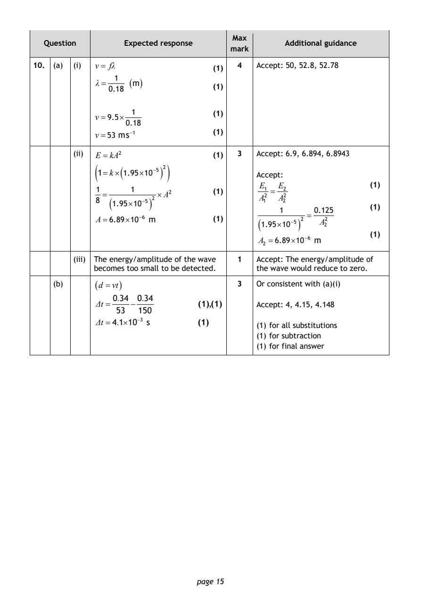
Selectable page text
Max
Question Expected response Additional guidance
mark
10. (a) (i) v= fλ 4 Accept: 50, 52.8, 52.78
(1)
1
λ= (m)
(1)
0.18
1 (1)
v=9.5×
0.18
(1)
v=53 ms⁻¹
(ii) E =kA² (1) 3 Accept: 6.9, 6.894, 6.8943
( )
( )
1=k× 1.95×10⁻⁵ ² Accept:
E₁ E₂ (1)
1 1 (1) =
= ×A²
A² A₂²
8 ( 1.95×10⁻⁵ ) ² 1
(1)
1 0.125
=
A=6.89×10⁻⁶ m (1) ( 1.95×10⁻⁵ ) ² A₂²
(1)
A₂ =6.89×10⁻⁶ m
(iii) The energy/amplitude of the wave 1 Accept: The energy/amplitude of
becomes too small to be detected. the wave would reduce to zero.
(b) ( d =vt ) 3 Or consistent with (a)(i)
0.34 0.34
Δt = − (1),(1) Accept: 4, 4.15, 4.148
53 150
Δt =4.1×10⁻³ s (1)
(1) for all substitutions
(1) for subtraction
(1) for final answer
page 15PDF page 16
Question 11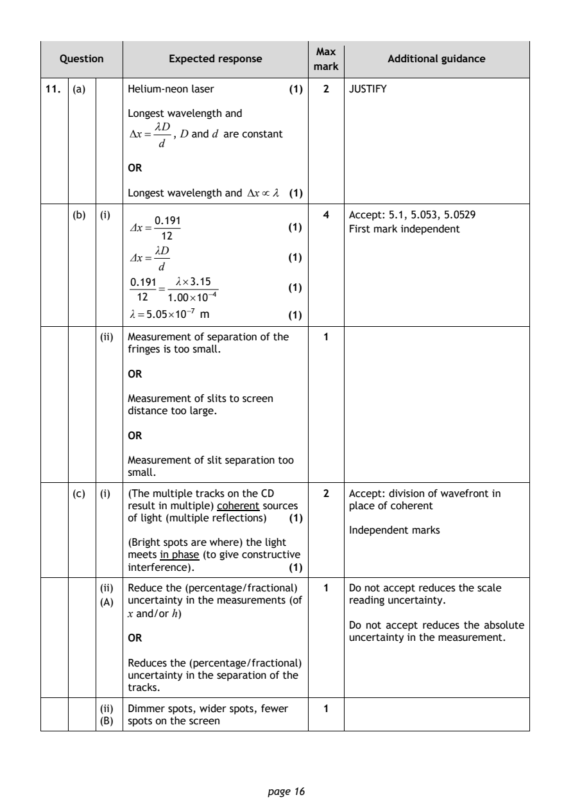
Selectable page text
Max
Question Expected response Additional guidance
mark
11. (a) Helium-neon laser (1) 2 JUSTIFY
Longest wavelength and
λD
∆x= , D and d are constant
d
OR
Longest wavelength and ∆x∝λ (1)
(b) (i) 4 Accept: 5.1, 5.053, 5.0529
0.191
Δx= (1) First mark independent
12
λD
Δx= (1)
d
0.191 λ×3.15
= (1)
12 1.00×10⁻⁴
λ=5.05×10⁻⁷ m (1)
(ii) Measurement of separation of the 1
fringes is too small.
OR
Measurement of slits to screen
distance too large.
OR
Measurement of slit separation too
small.
(c) (i) (The multiple tracks on the CD 2 Accept: division of wavefront in
result in multiple) coherent sources place of coherent
of light (multiple reflections) (1)
Independent marks
(Bright spots are where) the light
meets in phase (to give constructive
interference). (1)
(ii) Reduce the (percentage/fractional) 1 Do not accept reduces the scale
(A) uncertainty in the measurements (of reading uncertainty.
x and/or h)
Do not accept reduces the absolute
OR uncertainty in the measurement.
Reduces the (percentage/fractional)
uncertainty in the separation of the
tracks.
(ii) Dimmer spots, wider spots, fewer 1
(B) spots on the screen
page 16PDF page 17
Question 12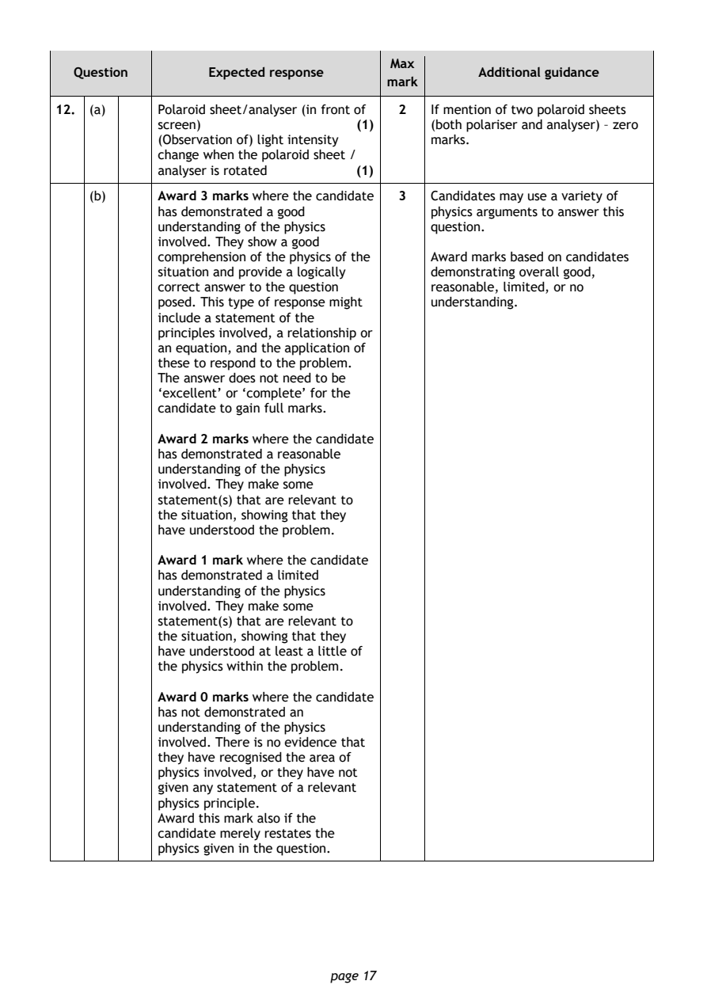
Selectable page text
Max
Question Expected response Additional guidance
mark
12. (a) Polaroid sheet/analyser (in front of 2 If mention of two polaroid sheets
screen) (1) (both polariser and analyser) – zero
(Observation of) light intensity marks.
change when the polaroid sheet /
analyser is rotated (1)
(b) Award 3 marks where the candidate 3 Candidates may use a variety of
has demonstrated a good physics arguments to answer this
understanding of the physics question.
involved. They show a good
comprehension of the physics of the Award marks based on candidates
situation and provide a logically demonstrating overall good,
correct answer to the question reasonable, limited, or no
posed. This type of response might understanding.
include a statement of the
principles involved, a relationship or
an equation, and the application of
these to respond to the problem.
The answer does not need to be
‘excellent’ or ‘complete’ for the
candidate to gain full marks.
Award 2 marks where the candidate
has demonstrated a reasonable
understanding of the physics
involved. They make some
statement(s) that are relevant to
the situation, showing that they
have understood the problem.
Award 1 mark where the candidate
has demonstrated a limited
understanding of the physics
involved. They make some
statement(s) that are relevant to
the situation, showing that they
have understood at least a little of
the physics within the problem.
Award 0 marks where the candidate
has not demonstrated an
understanding of the physics
involved. There is no evidence that
they have recognised the area of
physics involved, or they have not
given any statement of a relevant
physics principle.
Award this mark also if the
candidate merely restates the
physics given in the question.
page 17PDF page 18
Question 13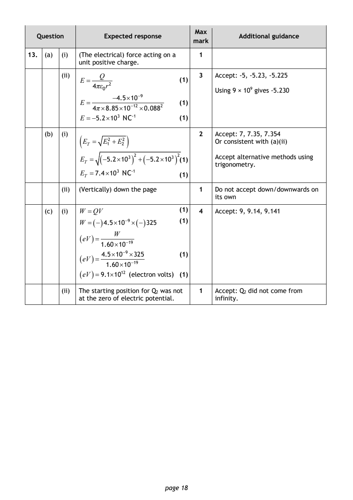
Selectable page text
Max
Question Expected response Additional guidance
mark
13. (a) (i) (The electrical) force acting on a 1
unit positive charge.
(ii) Q 3 Accept: -5, -5.23, -5.225
E = (1)
4πε₀r²
Using 9 × 10⁹ gives -5.230
−4.5×10⁻⁹
E = (1)
4π×8.85×10⁻¹²×0.088²
E =−5.2×10³ NC⁻¹ (1)
(b) (i) 2 Accept: 7, 7.35, 7.354
( )
E_{T} = E₁² +E₂² Or consistent with (a)(ii)
( ) ( ) Accept alternative methods using
E_{T} = −5.2×10³ ² + −5.2×10³ ²(1 )
trigonometry.
E_{T} =7.4×10³ NC⁻¹ (1)
(ii) (Vertically) down the page 1 Do not accept down/downwards on
its own
(c) (i) W =QV (1) 4 Accept: 9, 9.14, 9.141
W
=(−) 4.5×10⁻⁹×(−)
325
(1)
(
eV
)=
W
1.60×10⁻¹⁹
4.5×10⁻⁹×325 (1)
(
eV
)=
1.60×10⁻¹⁹
( eV )=9.1×10¹² (electron volts) (1)
(ii) The starting position for Q was not 1 Accept: Q did not come from
at the zero of electric pote²ntial. infinity. ²
page 18PDF page 19
Question 14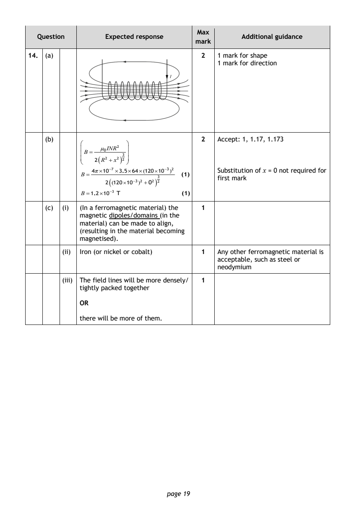
Selectable page text
Max
Question Expected response Additional guidance
mark
14. (a) 2 1 mark for shape
1 mark for direction
(b) 2 Accept: 1, 1.17, 1.173
μ₀INR²
B=
2 ( R²+x² ) ²³
4π×10⁻⁷×3.5×64×(120×10⁻³)² Substitution of x = 0 not required for
B= (1)
first mark
( )
2 (120×10⁻³)²+0² ²³
B=1.2×10⁻³ T (1)
(c) (i) (In a ferromagnetic material) the 1
magnetic dipoles/domains (in the
material) can be made to align,
(resulting in the material becoming
magnetised).
(ii) Iron (or nickel or cobalt) 1 Any other ferromagnetic material is
acceptable, such as steel or
neodymium
(iii) The field lines will be more densely/ 1
tightly packed together
OR
there will be more of them.
page 19PDF page 20
Question 15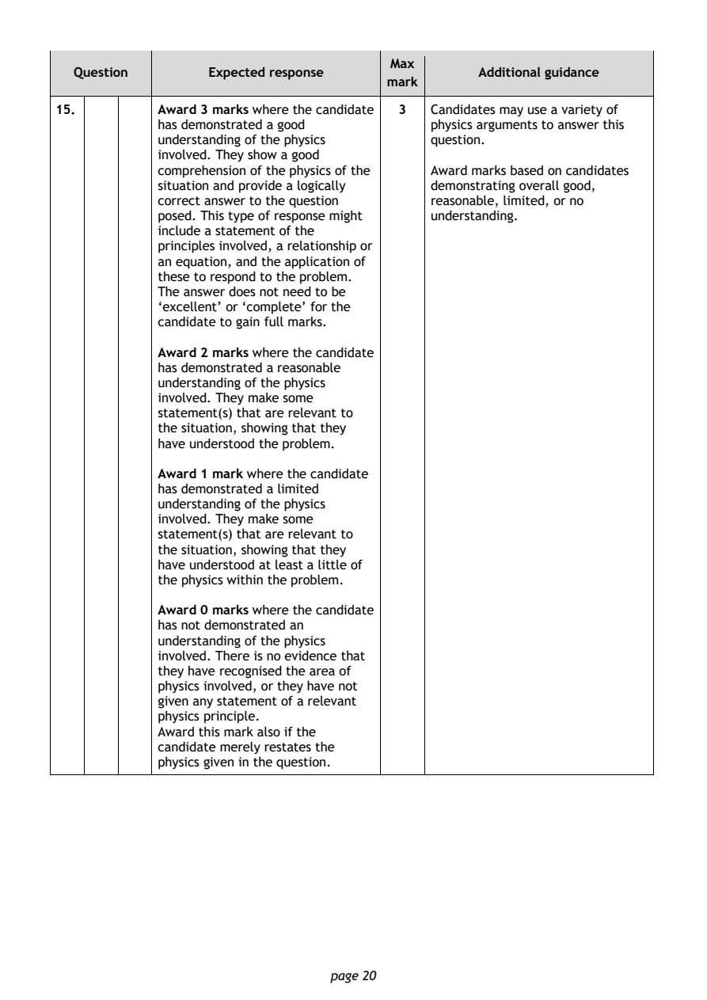
Selectable page text
Max
Question Expected response Additional guidance
mark
15. Award 3 marks where the candidate 3 Candidates may use a variety of
has demonstrated a good physics arguments to answer this
understanding of the physics question.
involved. They show a good
comprehension of the physics of the Award marks based on candidates
situation and provide a logically demonstrating overall good,
correct answer to the question reasonable, limited, or no
posed. This type of response might understanding.
include a statement of the
principles involved, a relationship or
an equation, and the application of
these to respond to the problem.
The answer does not need to be
‘excellent’ or ‘complete’ for the
candidate to gain full marks.
Award 2 marks where the candidate
has demonstrated a reasonable
understanding of the physics
involved. They make some
statement(s) that are relevant to
the situation, showing that they
have understood the problem.
Award 1 mark where the candidate
has demonstrated a limited
understanding of the physics
involved. They make some
statement(s) that are relevant to
the situation, showing that they
have understood at least a little of
the physics within the problem.
Award 0 marks where the candidate
has not demonstrated an
understanding of the physics
involved. There is no evidence that
they have recognised the area of
physics involved, or they have not
given any statement of a relevant
physics principle.
Award this mark also if the
candidate merely restates the
physics given in the question.
page 20PDF page 21
Question 16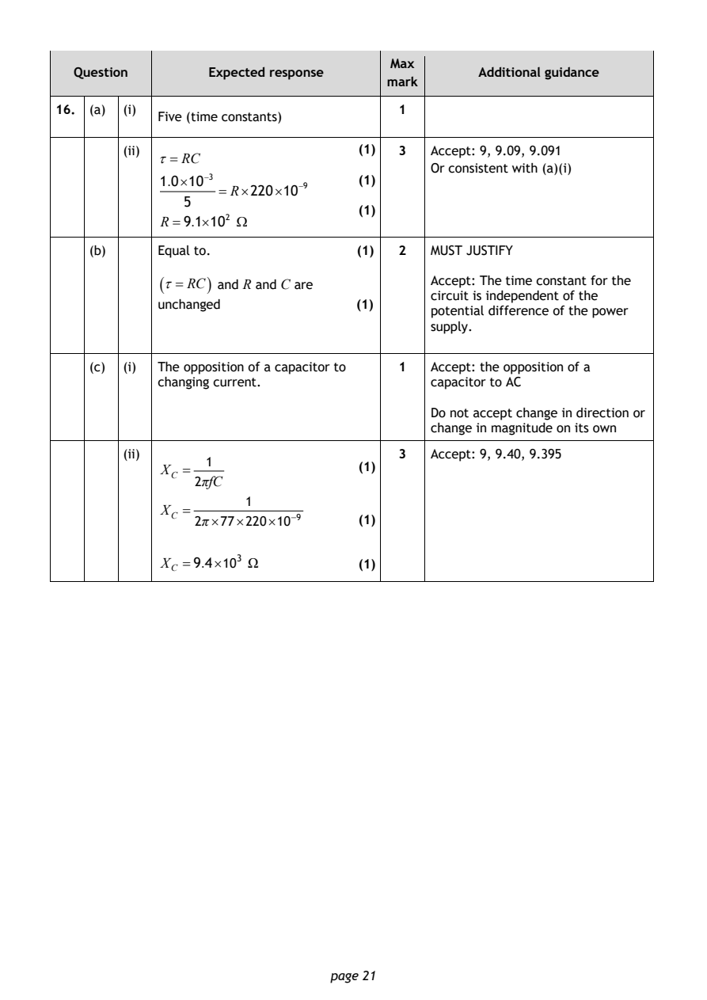
Selectable page text
Max
Question Expected response Additional guidance
mark
16. (a) (i) 1
Five (time constants)
(ii) (1) 3 Accept: 9, 9.09, 9.091
τ= RC
Or consistent with (a)(i)
1.0×10⁻³ (1)
= R×220×10⁻⁹
5
(1)
R=9.1×10² Ω
(b) Equal to. (1) 2 MUST JUSTIFY
(τ= RC ) and R and C are Accept: The time constant for the
circuit is independent of the
unchanged (1)
potential difference of the power
supply.
(c) (i) The opposition of a capacitor to 1 Accept: the opposition of a
changing current. capacitor to AC
Do not accept change in direction or
change in magnitude on its own
(ii) 3 Accept: 9, 9.40, 9.395
1
X_{C} = (1)
2πfC
1
X_{C} =
2π×77×220×10⁻⁹ (1)
X_{C} =9.4×10³ Ω (1)
page 21PDF page 22
Question 17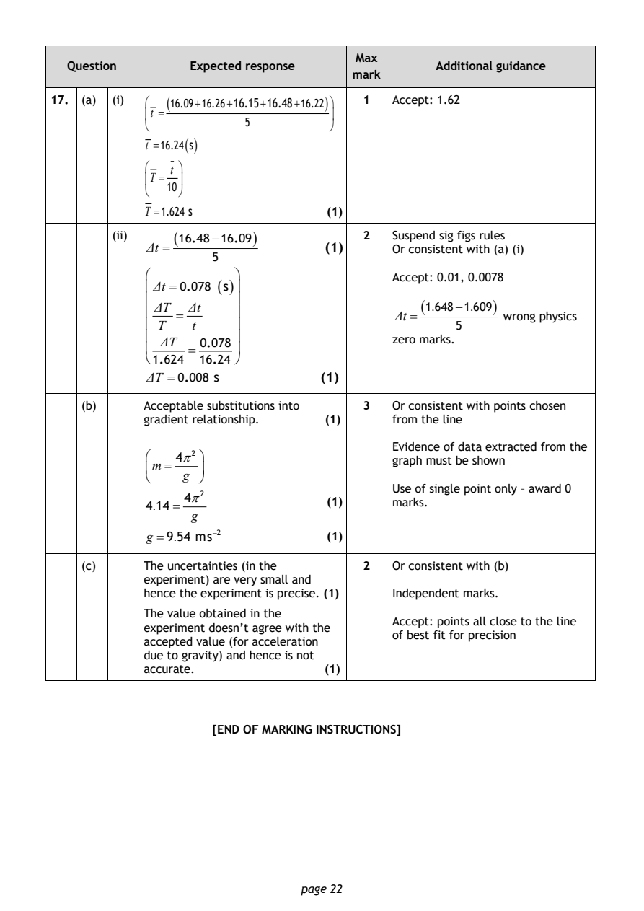
Selectable page text
Max
Question Expected response Additional guidance
mark
17. (a) (i) ( 16.09+16.26+16.15+16.48+16.22 ) 1 Accept: 1.62
t =
5
t =16.24 (s)
t
T =
10
T =1.624 s (1)
(ii) ( 16.48−16.09 ) 2 Suspend sig figs rules
Δt = (1) Or consistent with (a) (i)
5
Accept: 0.01, 0.0078
Δt =0.078 (s)
ΔT Δt ( 1.648−1.609 )
= Δt = wrong physics
T t 5
ΔT 0.078 zero marks.
=
1.624 16.24
ΔT =0.008 s (1)
(b) Acceptable substitutions into 3 Or consistent with points chosen
gradient relationship. (1) from the line
Evidence of data extracted from the
4π²
graph must be shown
m=
g
Use of single point only – award 0
4π²
4.14 = (1) marks.
g
g =9.54 ms⁻² (1)
(c) The uncertainties (in the 2 Or consistent with (b)
experiment) are very small and
hence the experiment is precise. (1) Independent marks.
The value obtained in the
Accept: points all close to the line
experiment doesn’t agree with the
of best fit for precision
accepted value (for acceleration
due to gravity) and hence is not
accurate. (1)
[END OF MARKING INSTRUCTIONS]
page 22